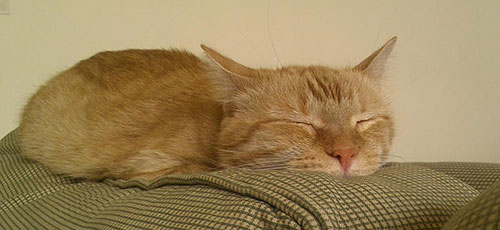
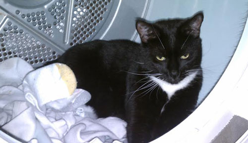

November 2015
 Bailey is the first cat I’ve ever owned. I adopted him from a local rescue about eight years ago. I didn’t know it at the time, but he has pretty serious eye sight problems. It took me a little bit to figure out just how bad his vision really is because he gets around just fine. He’s a pretty easy going cat, and he likes to play but his vision impairs him; we have to get toys that contrast with our carpet so he can see them. Some of his other favorite things are sleeping on top of the stairs, eating yogurt and being held like a baby. He also has a curly tail. He’s a rare and very lovable kitty! I came to adopt George about four years ago. A previous coworker saw an abandoned litter of cats by her house. She watched them for a while and saw that the mother was not returning and was not nearby. She took them in and raised them until they were old enough to be adopted out. I told her that I would take one and that I’d like a girl cat this time, since I’d had already had a boy cat. She had a pretty grey kitten picked out for me and a black tuxedo cat picked out for another coworker. On the day that she brought them to work, I went to meet my new kitty and just feel in love with the black tuxedo kitten instead of the grey one. He was a funny combination of fearless and terrified. He had so much personality and we clicked right away. My coworker clicked with the grey kitten as well. At first George needed to be with me at all times, including the shower and bathtub. He would also become jealous if I was on the phone. He would act out by getting on the counters or getting into cupboards or chewing on cables. Now he’s more independent, but still full of personality. He loves to play fetch but is particular about what he will play with, he will only play fetch with hair ties or very specific balls. He’s also a little mischievous, stubborn and very communicative. When he was in the vet’s office recuperating after being neutered, the tech called to ask if he was always “this verbal.” I assured her that he was. He also likes to chase Bailey around, but Bailey wants no part of it and would rather sleep. George certainly makes our life more entertaining!
|